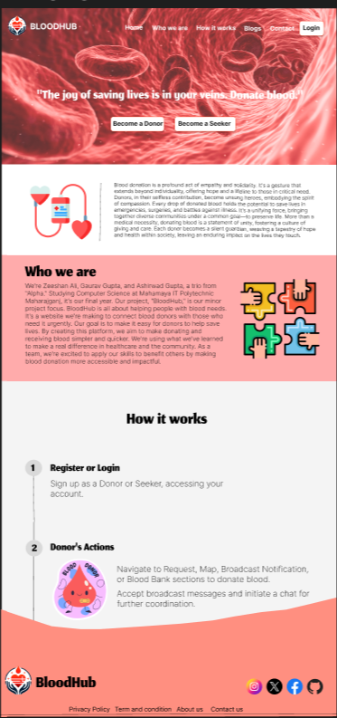
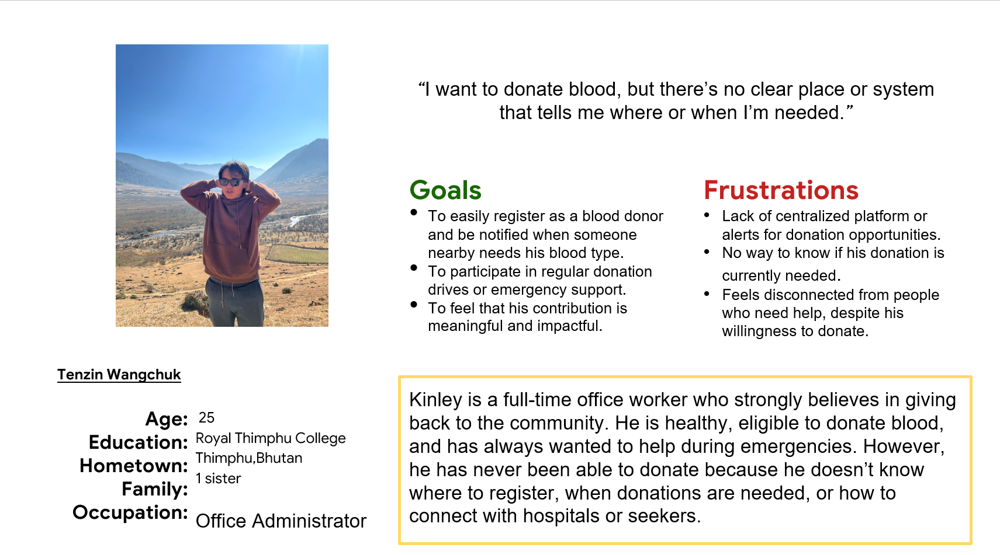
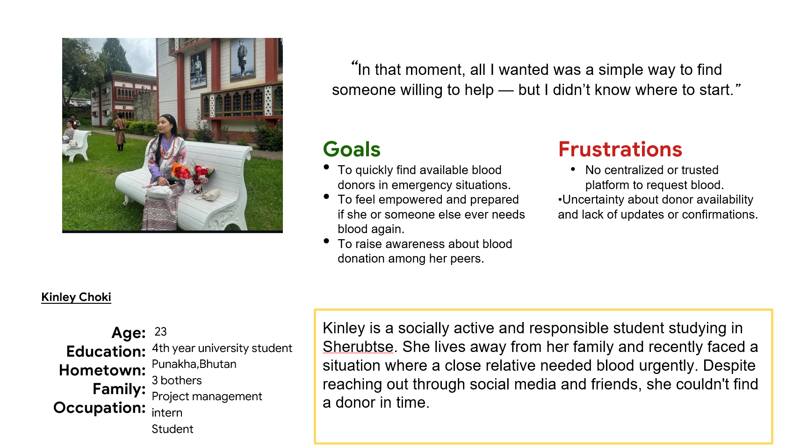
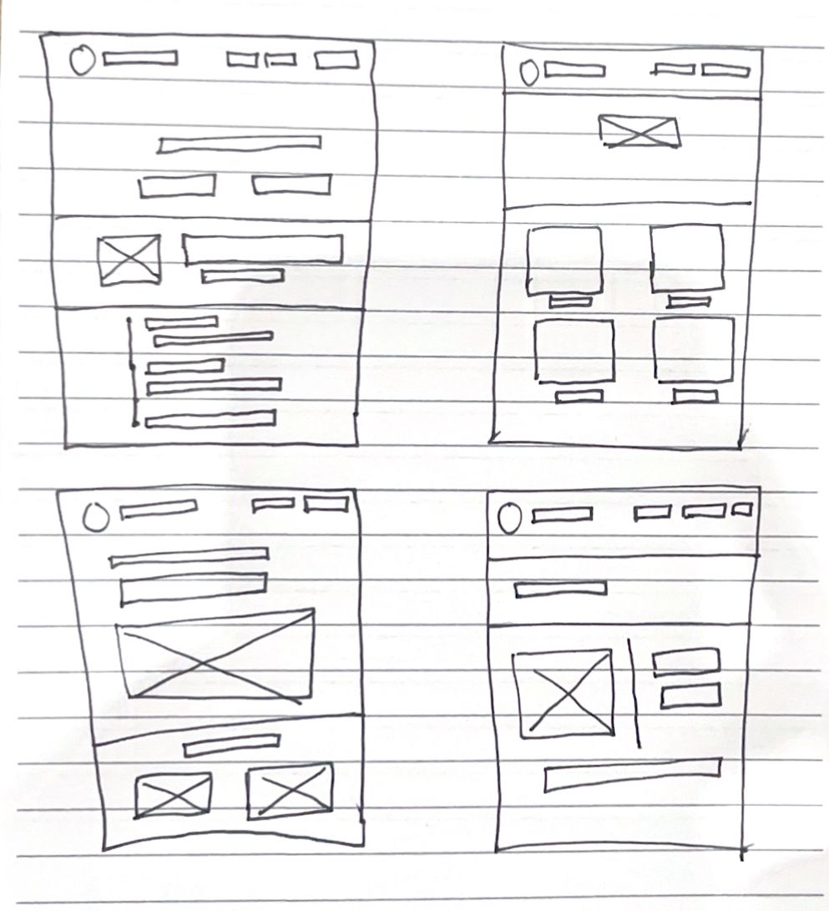
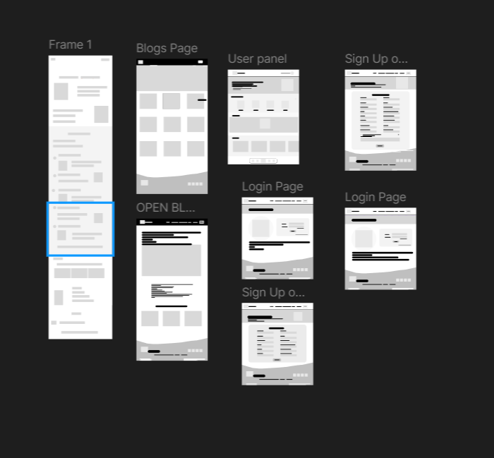
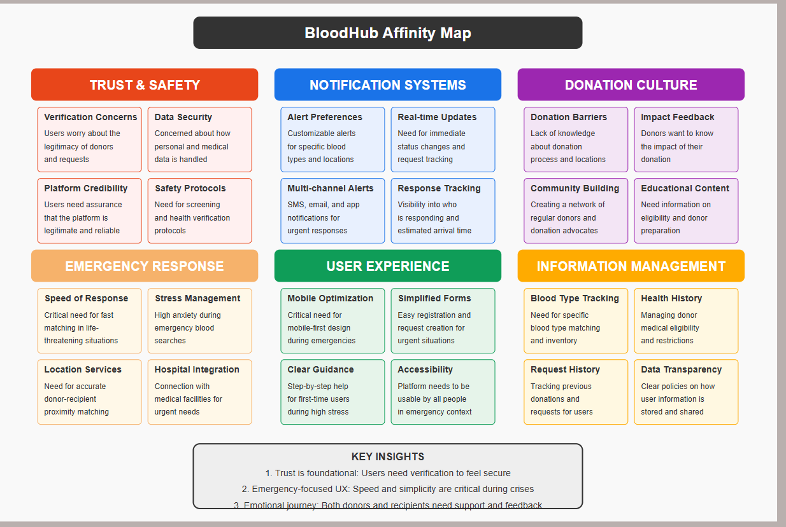
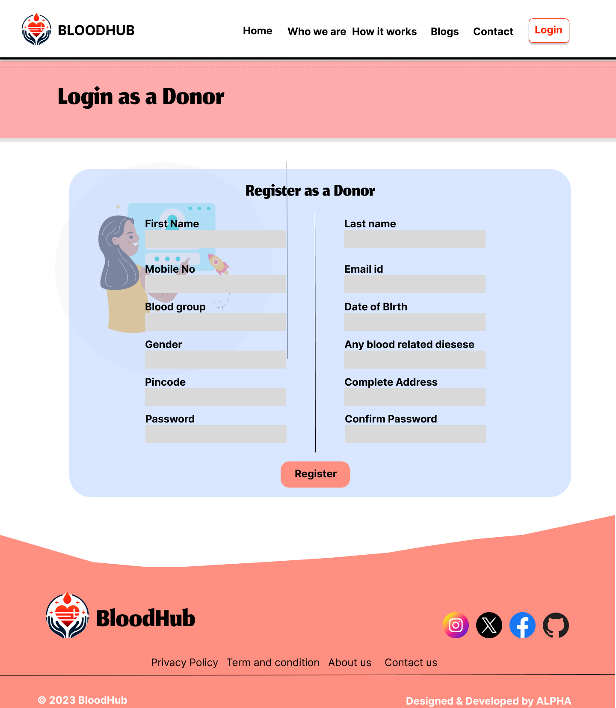
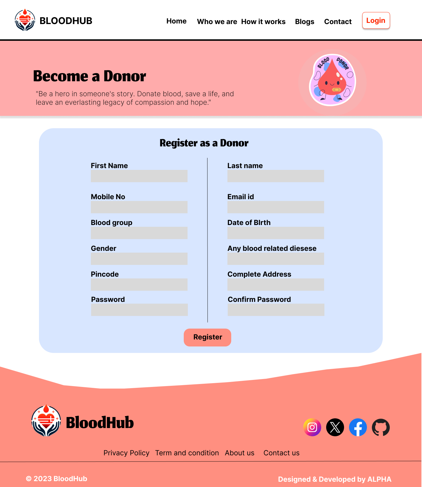
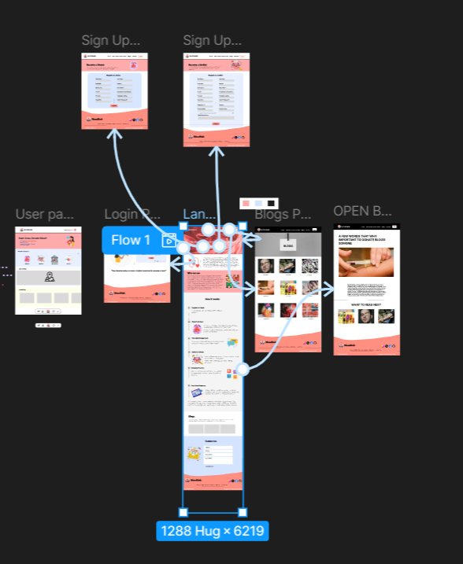

Users need a simpler, more visible way to request or offer blood—especially under urgent conditions.

Project Overview

Problem
Access to blood in critical moments is often delayed due to a lack of centralized systems, inefficient communication between donors and seekers, and limited public awareness about the importance and ease of blood donation.
Product
The platform enables users to donate blood, seek blood, and track requests in real-time, creating a life-saving network that is accessible and efficient. BloodHub ensures that no request goes unanswered in times of critical need. By fostering a digital community of responsible donors and healthcare responders, BloodHub simplifies the donation process, encourages regular giving, and strengthens emergency response systems.
Goal
To build a fast, accessible, and trustworthy network that bridges the gap between blood donors and those in need, ensuring timely and life-saving blood transfusions across communities.
Research Overview
I conducted moderated user interviews with two target users: Kinley Choko, a college student who urgently needed blood for a family member but struggled to find a donor, and Kinley Tshring, a working professional eager to donate blood but unsure where or how to begin. Our initial assumption was that users mainly needed a platform for registration and logistics, but the study revealed deeper emotional and usability barriers. Kinley Choko shared frustration with the lack of real-time donor availability, confusing channels for making a request, and the stress of navigating through unverified contacts during emergencies. On the other hand, Kinley Tshring expressed a strong willingness to help but had never donated because he didn’t know where to register or how to receive alerts about nearby blood needs. These insights led us to shift our design focus toward building user trust, providing real-time matching and clear calls-to-action, and simplifying access to donor and request workflows—especially on mobile devices, where most users turn during emergencies.
User Persona


Paper Wireframe

Low Fidelity Wireframe

Usability Findings
I conducted a moderated usability study to evaluate the effectiveness and user experience of the BloodHub platform, which connects blood donors and seekers. The study involved two participants with real-world experience related to blood donation—one who needed blood in an emergency, and another who wanted to donate but lacked access to information. Participants were asked to walk through core tasks such as requesting blood, signing up to donate, and exploring available matches. The goal was to identify pain points and understand how users interact with the platform under real-life conditions.
There is a lack of real-time location-based donor matching, which makes the platform feel disconnected and slow to respond.
The mobile navigation experience is unintuitive and overwhelming during emergency situations, especially for first-time users.
Affinity Diagram
Mockups
Before usability study
After usability study


High Fidelity Prototype
Accessibility Considerations
Ensure that all text, buttons, and alerts have sufficient color contrast against their backgrounds to be readable for users with low vision or color blindness. Use headings, spacing, and bold styling to guide users through tasks, especially in urgent scenarios.
Design all interactive elements (forms, buttons, navigation) to be fully operable using a keyboard and compatible with screen readers, so users with motor impairments or visual disabilities can easily request or offer blood.
Takeaway
Impact: BloodHub redefines how individuals in Bhutan connect during life-saving moments—making blood donation and access faster, clearer, and more human-centered. By bridging the communication gap between willing donors and those urgently seeking blood, the platform addresses a critical flaw in the current system: lack of centralized access, trust, and real-time responsiveness during emergencies.
What I Learned
Way Forward: Designing BloodHub helped me deeply understand the urgency, emotional stress, and uncertainty that both blood seekers and donors experience. It taught me that trust, speed, and clarity aren't just design goals—they are potentially life-saving features in this context. Through this project, I also recognized how crucial it is to design for accessibility, mobile-first use, and clear user flows—especially in emergency health scenarios. I learned the value of direct, empathetic communication in UI design, and the importance of reducing friction in every interaction. Host a design feedback session with both blood seekers and regular donors to validate ease-of-use and emotional tone. Conduct a second round of usability testing focused on mobile accessibility and emergency-time performance. Continue iterating on features like real-time donor matching, confirmation notifications, and trust signals (e.g., verified donor badges, hospital integrations).